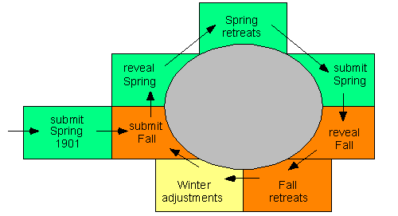

In Crystal Ball Diplomacy, players must submit orders for each turn before they know what really happened on the previous turn. In other words, the results for any given movement phase are not revealed to the players until after every player has issued (unchangeable) orders for the subsequent movement phase.
To put it another way, your units don't begin to respond to their orders until the next movement phase beyond the one when they'd normally respond. You always have two sets of orders, not one, "in the pipe." There's a big premium on correctly discerning now what's going to happen later; you can't respond to anything immediately; you watch in frustration as your units go on trying to execute a plan that's already failed, etc. -- just as in real warfare.
If regular Diplomacy is (as has been remarked) like a knife-fight in a dark room, Crystal Ball Diplomacy is like a knife-fight in a dark room on cough syrup. Conducted in Aramaic. With earplugs.
But remember General Patton's comment: "it rains on the enemy, too."
The delay in the delivery of adjudicated results to the players (mentioned above) is the main difference between standard Diplomacy and CBD. However, to prevent abuse of the rules by card-carrying fortune-tellers, a minor change is introduced regarding the submittal of orders. Otherwise, the underlying rules of Diplomacy remain unchanged and in force.
Note that retreats, builds, and removals are not planned (or mis-planned) in advance. Players enter orders for retreat and adjustment phases as these phases occur; players do not need to "forecast" such orders (though they do need to have thought out these contingencies if they hope to have an order entered and waiting for a new or retreated unit).
Thinking about Crystal Ball Diplomacy and the sequence in which its world unfolds can be a bit confusing. To chart a path through that confusion, the sequence of a game of Crystal Ball Diplomacy is shown below. 
In Crystal Ball Diplomacy, submission of movement orders differs from the usual order-writing procedure of standard Diplomacy. This difference is discussed in detail in the next section of these rules.
Orders for a movement phase in Crystal Ball Diplomacy are submitted in "lists." In addition to the usual adjudication (bounce, cut support, and so on), some orders may turn out to be impossible due to the fact that the unit mentioned does not exist (or at least does not exist at the specified location).
Thus, some or all of your orders may turn out to be void. That is your fault. Or maybe (if order lists are being made public -- see below) you did it on purpose to deceive someone. But then, that would be wrong, wouldn't it?
An order list must be received from each player having units in order to advance the game to the next phase.
Each order in an order list must contain the type of unit (Army or Fleet) being ordered, followed by the province or body of water in which the player imagines it to be situated when the list will be processed, followed by the order to be given to that unit.
For example, if the player is unsure whether he will have an army or a fleet in London, he must use two separate orders to make sure to order that unit to Yorkshire.
Each order must be a valid, legal Diplomacy order (with the single assumption made that all units mentioned in the order do in fact exist). That is, a unit may not be ordered to an impassible space, nor may a convoy order be issued to a fleet on land. This restriction is to prevent use of the order list as a plain-text mechanism for sending messages between players in no-press games, such as
F BRE - ENG HEY GERMANY: I'LL BE PLAYING SEALION THROUGH 1902
An order list may contain as many orders as the player wishes to issue, but only a certain number of them (from the top of the list down) will be "considered." The number of orders that will be "considered" is the same for all players; it is the number of supply centers controlled by the largest power on the board at the time the lists are processed.
[Note that this applies only to non-PROXY orders. PROXY orders (which may appear anywhere in an order list) are counted and handled separately. See Rule 3.3.]
For example, if England controls seven supply centers, and no other power controls more than seven, then the first seven orders in each player's order list will be considered. The eighth and subsequent orders in each list (if any) will be marked ignored.
Thus, for Spring (and Fall) 1901, each player may issue four orders for consideration (since Russia owns four supply centers). So if you are England, you might issue the following Fall order list:
F NWG C A Edi - Nwyand all four orders will be considered, meaning that if you have a fleet in the Channel, it will try to take Brest, and if you don't (because your Springtime attempt to move there was bounced by France), you will once again try to leave London to cause trouble for the Frenchman.
A Edi - NWG - Nwy
F Lon - ENG
F ENG - Bre
This rule makes it a bit easier on the smaller countries and tougher on the larger countries, tending to even out the game. Thus, if you are poor at predicting your future (and your strength in the game begins reflecting this), you'll get a better chance to defend yourself than would someone who might be a little better (luckier?) at prognostication.
The number of orders in an order list is unlimited. Players are free to use any orders (usually, those they know will be ignored) to convey messages to other players, which might be handy in a no-press game. For example, England could have used his fourth (or a fifth, etc.) order to write A Mun-Bur, which might tell Germany something -- though probably too late!
Some or all of the considered (i.e., non-ignored) orders in a list may specify an impossible action (for example, an attempt to convoy using a fleet that is not there, or an order of support for a non-existent unit). Any unit whose issued order is impossible will HOLD during the movement phase for which it received the impossible order, and will be eligible to receive support.
Considered orders that are issued for units that do not exist (or that do exist but are owned and controlled by another power) will be marked "no unit" or "noProxy" respectively. Such orders have no effect other than the use of an order in the total number of considered orders for that player.
A player may, in his order list, issue PROXY orders, each giving control of a particular unit for that phase to any other specified, non-eliminated player.
As with non-PROXY orders, only a certain number of PROXY orders are "considered," the others being ignored. In the case of PROXY orders, the number that can be "considered" is the number of supply centers controlled by the smallest (non-eliminated) power in the game [credit for this rule goes to Pitt Crandlemire]. Unless contradicted later in the list by another considered order for the same unit, every considered PROXY order in an order list will be honored.
Let's say that you are England, allied with France, and you theorize that in a certain Spring you will have armies in Belgium and Ruhr, and France will have a new build in Paris. You and France plan that at this point, France will use his Paris army to take Munich with your support. However, your order lists are:
| Spring | Fall | |
|---|---|---|
|
A Bel - Bur A Ruh S A Bel - Bur |
A Ruh S A Bur - Mun A Bur PROXY TO FRANCE |
Units proxied from one power to another must be ordered (or left unordered, but may not be "re-proxied") by the power receiving the proxy. Any unit that is proxied twice on the same turn (first by its true owner, then again by the power receiving the owner's proxy) will HOLD.
If two or more dissimilar orders are given for the same (existing) unit, and if any two of these are considered (that is, not ignored), then the last such considered order is followed.
As in standard Diplomacy, any units left unordered in a movement phase will HOLD and may be supported. This applies to PROXY orders in that if the power granted the PROXY does not issue an order to the unit, the unit will HOLD.
When each turn is adjudicated, each of the orders in an order list is annotated according to the list below:
The GameMaster may not divulge the contents of any player's "locked-in" order list, in full or in part, to any other player, even if requested to do so by the player who had submitted the order list.
In a game that allows communication (press) between players, the full annotated order list submitted by each player for an adjudicated phase is available only to the submitting player. Each player has full access to all of his own order lists for the game, but has no access to those of other powers until the end of the game, when all order lists are revealed.
However, in no-press games (and optionally in press games), the lists are made public immediately. This allows players to use extra, ignored, orders to communicate their intentions and wishes.
If a player achieves a solo victory, players may actually submit order lists for an unnecessary Spring movement phase. If the Game Master realizes a solo victory has been achieved, he may process the final Fall movement phase early (without having collected order lists for the subsequent Spring).
Players may agree to share a draw equally among all surviving players at any time. Such agreement is immediate, and is not contingent on any phase of the game that is yet to be processed.
A player who is eliminated in a Fall movement phase will not know about his elimination until after he has submitted orders for the subsequent Spring phase.
Even if a Game Master notices that a player is eliminated, he must not inform the player of his elimination before the orders accomplishing his elimination are processed. Such a player is still eligible to share in any declared draw, and other players may be negotiating with him on the basis of his supposed survival.
Additionally, if any other player had issued PROXY orders for the coming Spring phase, which give to the now-eliminated player the right to issue orders for any unit, those orders will be honored. That is, despite being eliminated, the player will indeed be able to receive and execute any proxies he was offered by other players for the initial Spring turn after his elimination (but not for any subsequent turn).